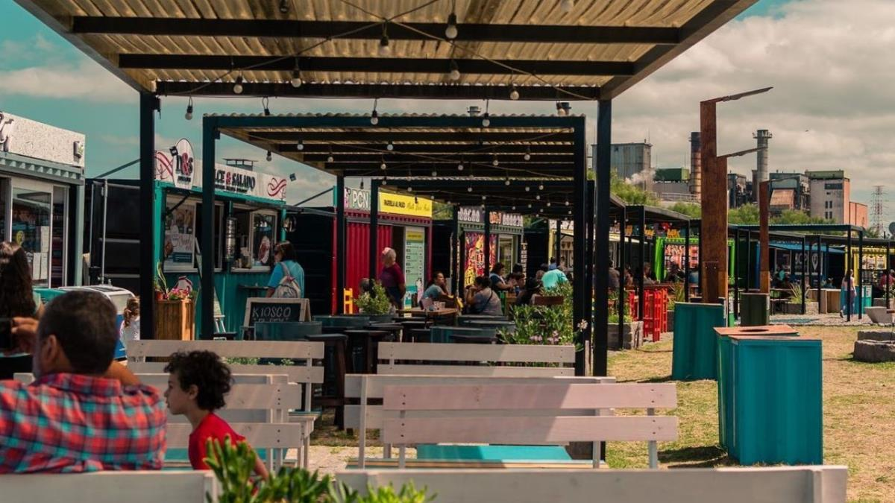
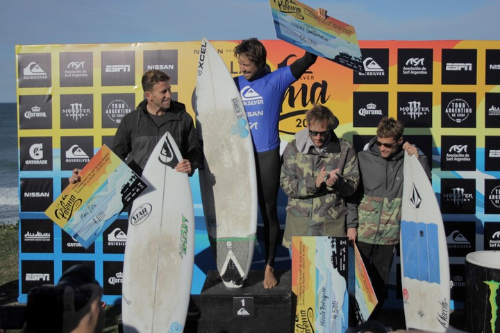
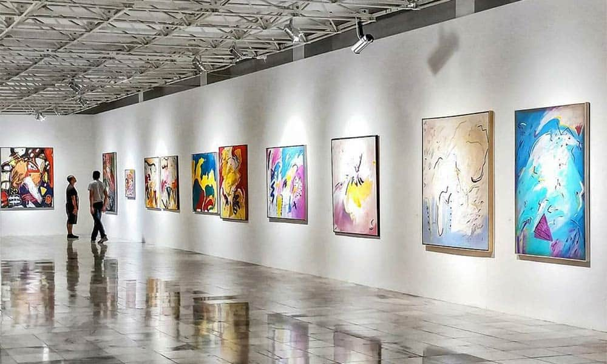
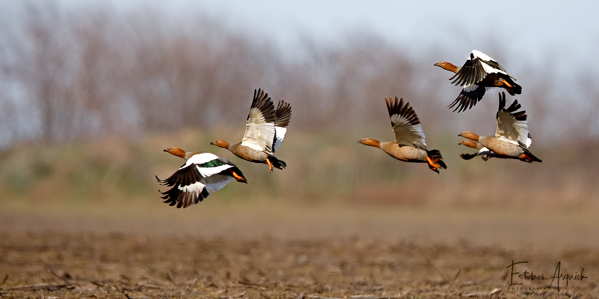
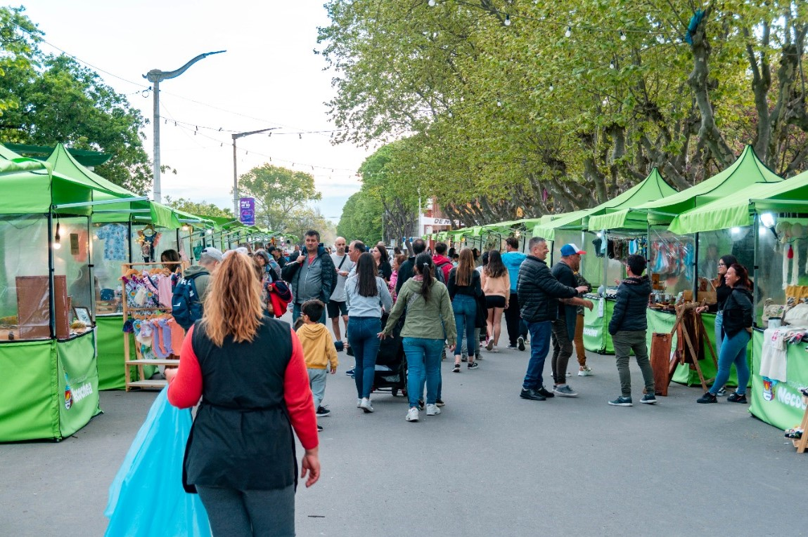
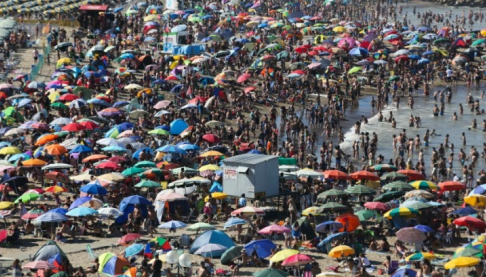
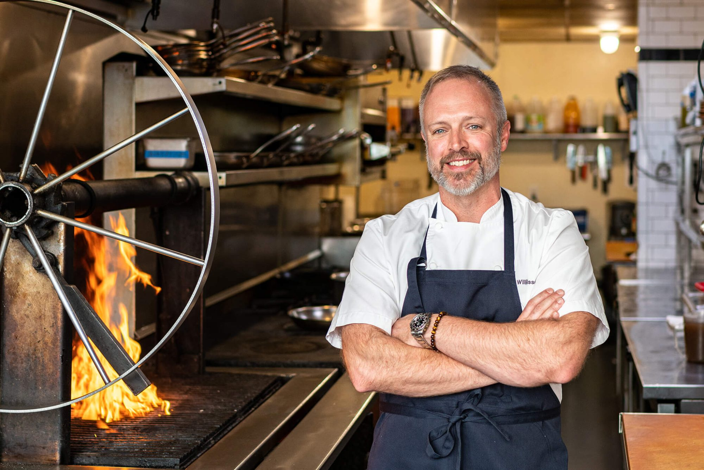

Últimas noticias
Eventos

Festival de verano en la playa central de Necochea reunió a miles de visitantes
Tres días de música en vivo, gastronomía regional y actividades para toda la familia convirtieron a la costa necochense en el centro del turismo bonaerense durante el fin de semana largo...
Leer nota completa →

Naturaleza
5 Jun 2025
Nueva senda interpretativa habilitada en el Parque Miguel Lillo

Turismo
1 Jun 2025
Qué hacer en Necochea fuera de la temporada de verano

Gastronomía
28 May 2025
Festival gastronómico en el Puerto Quequén: mariscos y parrilla
Más noticias
Deportes

Deportes
Campeonato de surf en las playas de Necochea
22 May 2025
Más de 80 surfistas de toda la provincia participaron del torneo anual en la playa central.
Leer más →
Cultura

Cultura
Exposición de arte local en el Centro Cultural de Necochea
18 May 2025
Artistas locales exponen sus obras en una muestra que estará abierta hasta fin de mes.
Leer más →
Naturaleza

Naturaleza
Avistaje de aves en la Reserva Arroyo Zabala este invierno
14 May 2025
La reserva registra un récord de especies migratorias esta temporada invernal.
Leer más →
Eventos

Eventos
Feria de artesanos en la plaza principal durante el fin de semana
10 May 2025
Más de 40 artesanos de la región presentarán sus productos en la plaza central de Necochea.
Leer más →
Turismo

Turismo
Necochea superó el millón de visitantes en la temporada 2024-2025
5 May 2025
La ciudad registró un crecimiento del 18% en el turismo respecto a la temporada anterior.
Leer más →
Gastronomía

Gastronomía
Nuevos restaurantes abren sus puertas en el casco céntrico
1 May 2025
Tres nuevos locales gastronómicos se suman a la oferta culinaria de Necochea este mes.
Leer más →
‹
1
2
3
4
5
›